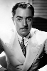
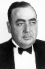
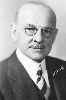

Country:United States, 73 minutes
Spoken languages:
Genres:Crime, Mystery
Director(s):Michael Curtiz
Writer(s):Robert N. Lee, Peter Milne, S.S. Van Dine
Video Codec:Unknown
Number: 1741


Certification:NR
Storyline:
Philo Vance, accompanied by his prize-losing Scottish terrier, investigates the locked-room murder of a prominent and much-hated collector whose broken Chinese vase provides an important clue.
Cast:   

Medium: Original DVD,
Comments: Part of: Mystery Classics - 50 Movie Pack
Loaned: No
Aspect ratio: Unknown